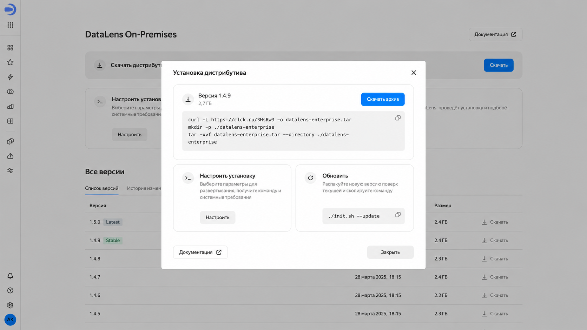

Проблема
Основные действия спрятаны внутри диалогового окна скачивания. Пользователю сложно выбрать следующий шаг и найти подходящий способ установки
Гипотеза
Если вынести основные сценарии на главную, а в диалоговом окне оставить действия с выбранной версией, пользователю будет проще выбрать следующий шаг
Главная с основными сценариями

Диалоговое окно посвящено работе с выбранной версией
